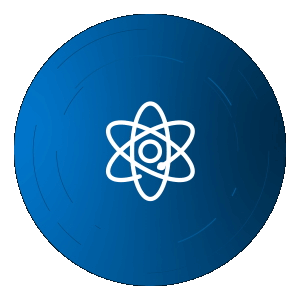

About Me (নিঃশঙ্ক দাস)
I am a passionate Quantum Computing Enthusiast with a deep interest in exploring how technology intersects with human cognition. My work spans Machine Learning, Graph Theory, Formal Languages, and Quantum Algorithms/Machine Learning, with a focus on understanding how computational systems and the mind connect.
Education & Experience
Education
-
Bachelor of Science in Computer Science
Ramakrishna Mission Vivekananda Centenary College, Rahara
(2022 - Present)Current SGPA : 9.46
CGPA (Ongoing) : 8.75 -
Higher Secondery
Kamalpore High School (2022)
Focus: PCM with Computer Sciennce (76.8%)
-
Secondery
Kamalpore High School (2020)
Obtained Marks : 89.72%
Experience
-
Buddhanka Institute
I. Faculty of Computer Science and Application
(Apr' 2024 to Present)
II. Front-End Designer and Develepor (Nov' 2024 to Present) -
University Of Calcutta
I. Quantum Computing Research Intern at A.K. Choudhury School of Information Technology
(Oct' 2023 to Present) -
RKMVCC
I. Designer for Anual Tech Fest (Intra and Inter)
(Feb' 2024 to Oct' 2024)
Projects
Quantum Computing

Pulser Star Classifier
Pourpus of project : NIT Rourkela QuCAM Workshop, Classification of palsur stars with multiple feachures extracted from given Dataset
Learn MoreQuantum Finance : A Fraud Prediction Model
Quantum Support Vector Machine with a comparison of Classical Support Vector Machine resulting significent advantage in loss minimization in Quantum Version.
Learn MoreMachine Learning

Multispectral Image Segmentation using U-Net
Explored water body segmentation for pattern recognition.
Learn More
Hand Written Number Classification
Built a CNN model for image classification using TensorFlow.
Learn MoreInterdeciplinary
Personality Test by Psychoanalysis
Explored quantum neural networks for pattern recognition.
Learn MoreWeb & Designing

Download My CV
Feel free to download my CV to learn more about my skills and experience.
Download CV